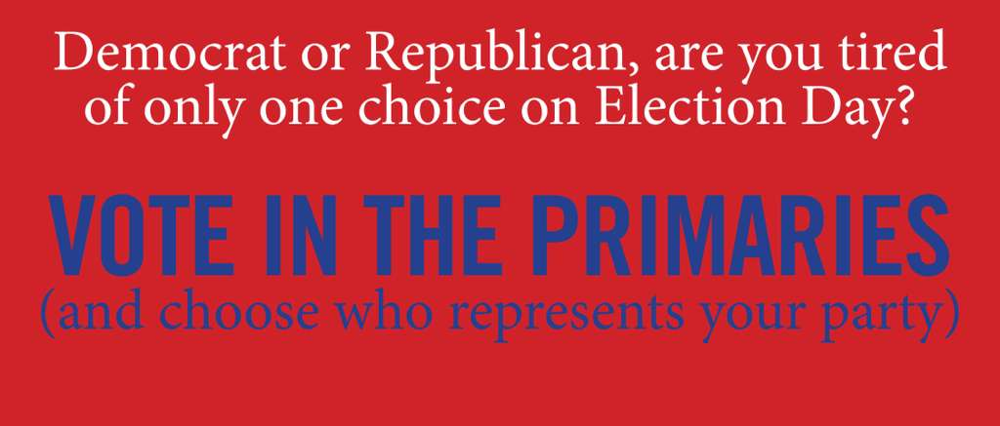

We think the radicalized direction of the country in the early-21st-century is unsustainable, unless the majority of Americans speak up and demand change—use this site to start demanding changes
What You Can Do On This Site
- Dive DEEP into our philosophy and see what we are doing to further our mission
- See who we endorse in BOTH POLITICAL PARTIES in upcoming Primaries and General Elections. These candidates may not reflect all of your political values or priorities, but in our opinion they are rational in their decision making and do not take the extreme positions of their party just to get attention or rile up their base
- Discuss and Debate with our MAJORITARIAN CANDIDATE, an AI bot trained on the major issues facing America with a focus on rational and actionable platform positions that data shows the majority of Americans support! See what a truly independent candidate could do for our country
- Send us an email to ask us a question or receive additional information on our activities in the future
- Register here to vote in Texas primaries
- Donate to Citizens for Rational Government to help us educate and prepare the public to fight extremism at the ballot box